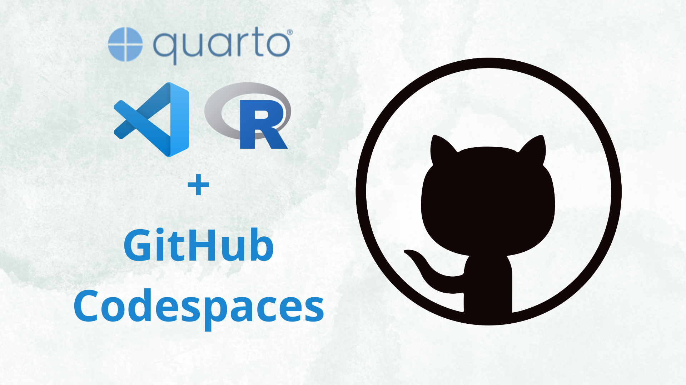
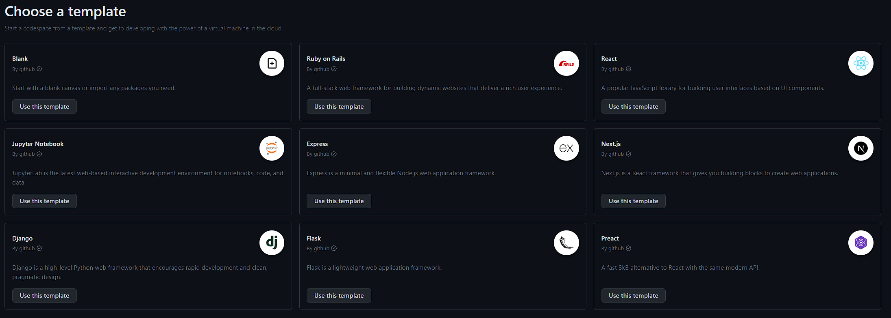
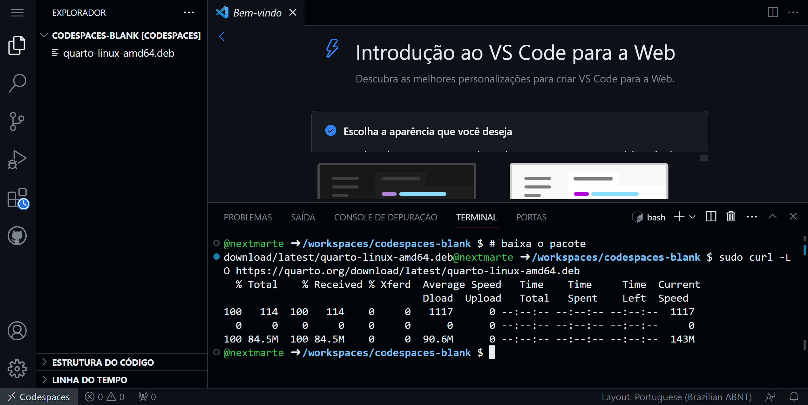
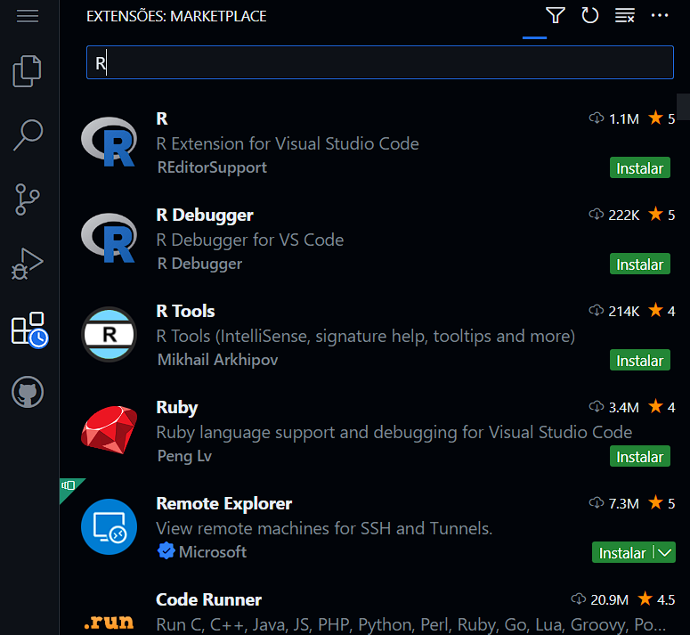
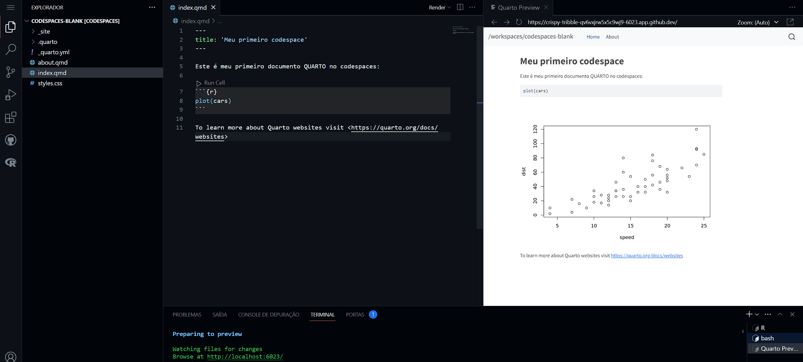

plot(cars)
Lidando com a falta de recursos computacionais em sala de aula
No último semestre eu fui estagiário em uma disciplina que tinha por objetivo ensinar fundamentos de ciência de dados com R aplicado em finanças para alunos de administração e engenharia. As aulas foram ministradas em um laboratório da minha faculdade que contava com computadores relativamente antigos (tecnologias anteriores a 2015) usando em sua maioria o windows 8. A IDE de escolha foi o RStudio, algo que aliado a baixa capacidade de processamento dos computadores, tornava a experiência de aprendizado muito ruim, pois várias vezes as aulas eram atrasadas ou retardadas devido ao mau funcionamento dos computadores que demoravam para realizar tarefas simples como o download de um pacote ou a renderização de um documento markdown. Como paliativo, sugeri a vários alunos o uso da mesma IDE na nuvem.
Pensando nesse problema acabei encontrado o codespaces do GitHub como possível solução, nele o professor pode criar e preparar um ambiente com todos os recursos necessários para viabilizar o ensino da disciplina usando o GitHub Classroom ou o Google Classroom. Os alunos contam com mais de 180 h/core por mês para realizar as tarefas, além disso tem acesso a todas as vantagens do programa GitHub Student Developer Pack. O melhor de tudo é que o professor não precisa pagar nada por isso, pois o GitHub disponibiliza o serviço de forma gratuita para professores e alunos de instituições de ensino parceiras. Neste post eu vou ensinar a como preparar o ambiente de desenvolvimento com Quarto e R, além de como rodar um projeto Quarto usando o Codespaces.
O que você precisa para seguir este tutorial? Uma conta no github. É simples assim, a única parte que tive alguma dificuldade foi na instalação do QUARTO no ambiente linux, mas superei rapidamente usando uma alternativa ao método de instalação sugerido na documentação oficial.
Passo 1 - acessar o codespaces e criar um ambiente em branco
Acesse o Codespaces e clique em Get started for free. Serão exibidas diversas opções de template, esses templates já vem com o ambiente de desenvolvimento pré-configurado para outras linguagens e frameworks, mas como vamos instalar o Quarto e o R, escolha a opção Blank. 
Você verá a interface do VScode e em alguns segundos o ambiente estará pronto para uso. Você pode acessar o terminal clicando em Terminal é através dele que vamos instalar o Quarto e o R.
Passo 2 - Instalar o Quarto
Vocês não precisa saber bash para realizar a instalação, basta copiar e colar ou digitar os comandos abaixo no terminal.
# baixa o pacote usando privilégios de administrador
sudo curl -LO https://quarto.org/download/latest/quarto-linux-amd64.deb
O arquivo será baixado na pasta codespaces-blank, para conferir digite ls -l no terminal e pressione enter. Agora vamos instalar o pacote usando o comando dpkg:
# instala o cli do QUARTO usando privilégios de administrador
#e verifica a instalação
sudo dpkg -i quarto-linux-amd64.deb
/usr/local/bin/quarto checkobs.: a documentação oficial sugere o uso do comando gdebi porém ele não está disponível por padrão na distribuição linux do codespaces, por isso usei o dpkg.
#output
@user ➜ /workspaces/codespaces-blank $ /usr/local/bin/quarto check
[✓] Checking versions of quarto binary dependencies...
Pandoc version 3.1.1: OK
Dart Sass version 1.55.0: OK
[✓] Checking versions of quarto dependencies......OK
[✓] Checking Quarto installation......OK
Version: 1.3.450
Path: /opt/quarto/bin
[✓] Checking basic markdown render....OK
[✓] Checking Python 3 installation....OK
Version: 3.10.8
Path: /home/codespace/.python/current/bin/python3
Jupyter: 5.3.1
Kernels: python3
[✓] Checking Jupyter engine render....OK
[✓] Checking R installation...........(None)
Unable to locate an installed version of R.
Install R from https://cloud.r-project.org/Passo 3 - Instalar o R
Verifique que o nosso check não encontrou o R instalado, vamos resolver isso agora. Vamos acessar o https://cloud.r-project.org/ e descobrir como instalar o R. Para isso precisamos descobir qual é a distribuição linux que estamos usando, para isso digite cat /etc/os-release no terminal e pressione enter.
#output
/workspaces/codespaces-blank $ cat /etc/os-release
NAME="Ubuntu"
VERSION="20.04.6 LTS (Focal Fossa)"
ID=ubuntu
ID_LIKE=debian
PRETTY_NAME="Ubuntu 20.04.6 LTS"
VERSION_ID="20.04"
HOME_URL="https://www.ubuntu.com/"
SUPPORT_URL="https://help.ubuntu.com/"
BUG_REPORT_URL="https://bugs.launchpad.net/ubuntu/"
PRIVACY_POLICY_URL="https://www.ubuntu.com/legal/terms-and-policies/privacy-policy"
VERSION_CODENAME=focal
UBUNTU_CODENAME=focalComo estou usando o Ubuntu 20.04.6 LTS (Focal Fossa), vou seguir as instruções para instalação do R no Ubuntu. Vamos adicionar o repositório do CRAN ao nosso sistema, para isso digite os comandos abaixo no terminal:
# atualiza os índices
sudo apt update -qq
# instala dois pacotes auxiliares que precisamos
sudo apt install --no-install-recommends software-properties-common dirmngr
# adiciona a chave de assinatura (por Michael Rutter) para esses repositórios
# Para verificar a chave, execute gpg --show-keys /etc/apt/trusted.gpg.d/cran_ubuntu_key.asc
# Impressão digital: E298A3A825C0D65DFD57CBB651716619E084DAB9
wget -qO- https://cloud.r-project.org/bin/linux/ubuntu/marutter_pubkey.asc | sudo tee -a /etc/apt/trusted.gpg.d/cran_ubuntu_key.asc
# adiciona o repositório R 4.0 do CRAN - ajuste 'focal' para 'groovy' ou 'bionic', se necessário
sudo add-apt-repository "deb https://cloud.r-project.org/bin/linux/ubuntu $(lsb_release -cs)-cran40/"
# instala o R
sudo apt install --no-install-recommends r-base
# Instala alguns pacotes recomendados
sudo add-apt-repository ppa:c2d4u.team/c2d4u4.0+Passo 4 - instalar as extensões do VScode
Para usar o R e o QUARTO vamos precisar instalar as extensões do VScode, para isso clique no ícone de extensões no menu lateral esquerdo e digite R no campo de busca e instale a extensão R. Repita o processo para instalar a extensão Quarto.

passo 5 - instalar pacotes (apenas se você não tiver instalado os pacotes sugeridos)
Primeiro vamos instalar algumas dependências do do Quarto para o R. O primeiro é o pacote rmarkdown, para isso digite R no terminal e pressione enter, isso vai abrir o console do R. Agora digite install.packages("rmarkdown") e pressione enter. Você precisará criar uma pasta lib para os pacotes do R, você pode fazer isso antes ou somente aceitar a criação automática da pasta no processo de instalação do primeiro pacote. Este processo pode demorar alguns minutos dependendo do poder de processamento do seu codespace.
Atenção
Se você já tiver instalado os pacotes em ‘sudo add-apt-repository ppa:c2d4u.team/c2d4u4.0+’ você pode pular este passo.
passo 6 - criar um projeto quarto
Para testar a instalação do R e do QUARTO vamos criar um projeto quarto no diretório workspaces/codespaces-blank usando o comando quarto create.
# cria um projeto quarto no diretório workspaces/codespaces-blank
@user ➜ /workspaces/codespaces-blank $ quarto create
#output
? Create › project
? Type › website
? Directory › /workspaces/codespaces-blank
Creating project at /workspaces/codespaces-blank/workspaces/codespaces-blank:
- Created _quarto.yml
- Created index.qmd
- Created about.qmd
- Created styles.cssCaso queira fazer usando a interface clique em file, escolha a opção quarto project e siga as instruções da tela.
Caso você tenha feito o processo pelo terminal, uma nova janela se abrirá com a pasta do projeto, a partir daqui você pode inicializar o repositório git e fazer o commit inicial caso queira, ainda não vou abordar essa parte, vai ficar para um próximo post.
Ao abrir o arquivo index.qmd você verá que ele é um arquivo markdown com algumas extensões, como por exemplo a possibilidade de usar blocos de código com a linguagem R. Vamos testar isso, digite o código abaixo no arquivo index.qmd:
Agora vamos renderizar o arquivo, para isso clique no ícone do quarto no menu lateral esquerdo e escolha a opção Render Document. Você verá que o arquivo index.html foi criado na pasta site do projeto. Outra forma de renderizar é usando o comando quarto render no terminal.
quarto render
Considerações finais
Neste post eu mostrei como criar um codespace no github e como instalar o R e o QUARTO. Também mostrei como criar um projeto quarto e renderizar o arquivo index.qmd. O processo parece trabalhoso, mas só precisa ser feito uma vez pois o codespaces nada mas é do que um container com o ambiente de desenvolvimento que você precisa para trabalhar, assim é possível manter um ambiente único para toda uma turma, por exemplo.
O processo consiste em disponibilizar o repositório com o ambiente de desenvolvimento e os alunos criarem branches para desenvolverem seus projetos, tudo isso integrado ao github classroom, mas isso vai ficar pra outro post.
Se você leu até aqui muito obrigado, espero que tenha gostado e que tenha sido útil. Se você tiver alguma dúvida ou sugestão, por favor, deixe um comentário abaixo ou entre em contato comigo pelo twitter @nextmarte. Cadastre seu e-mail para receber o próximo post e outras novidades.